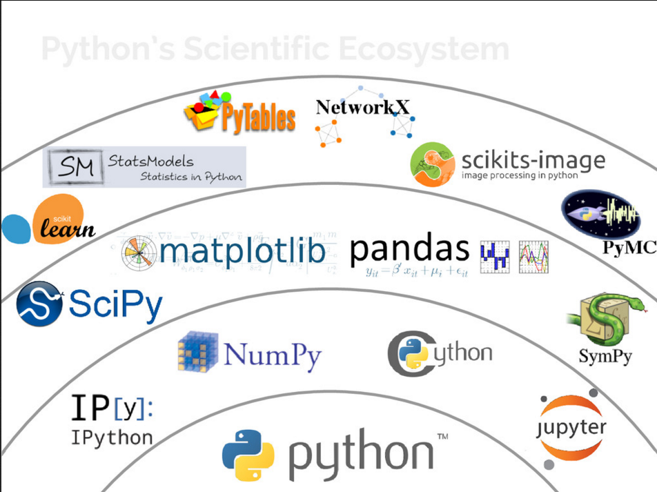
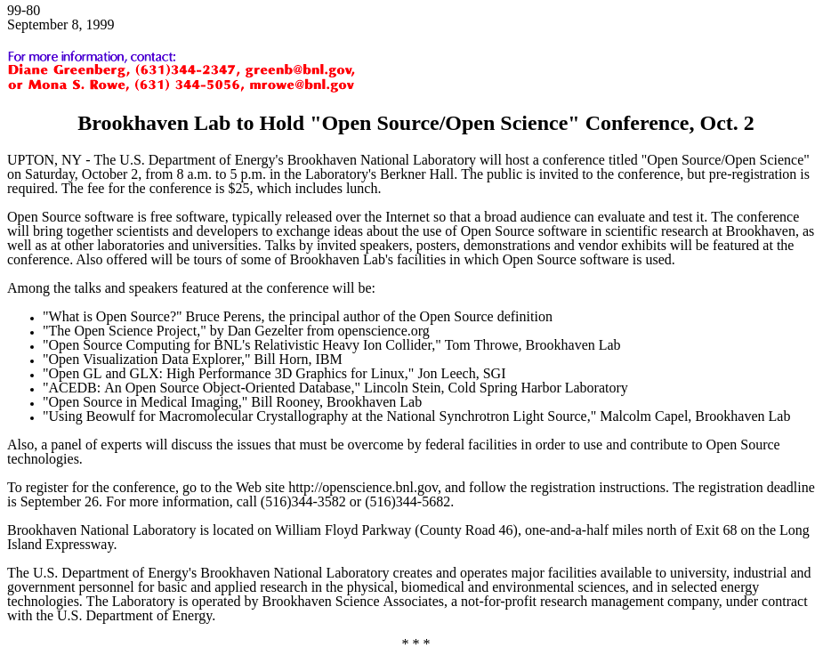
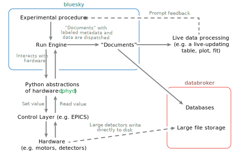
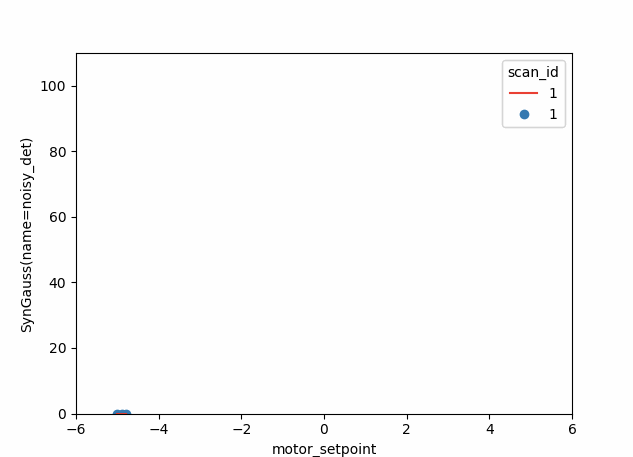
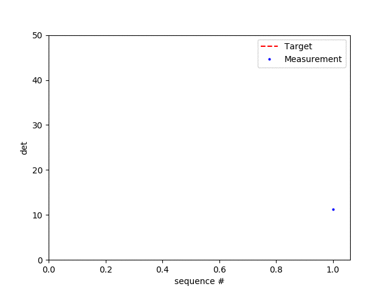
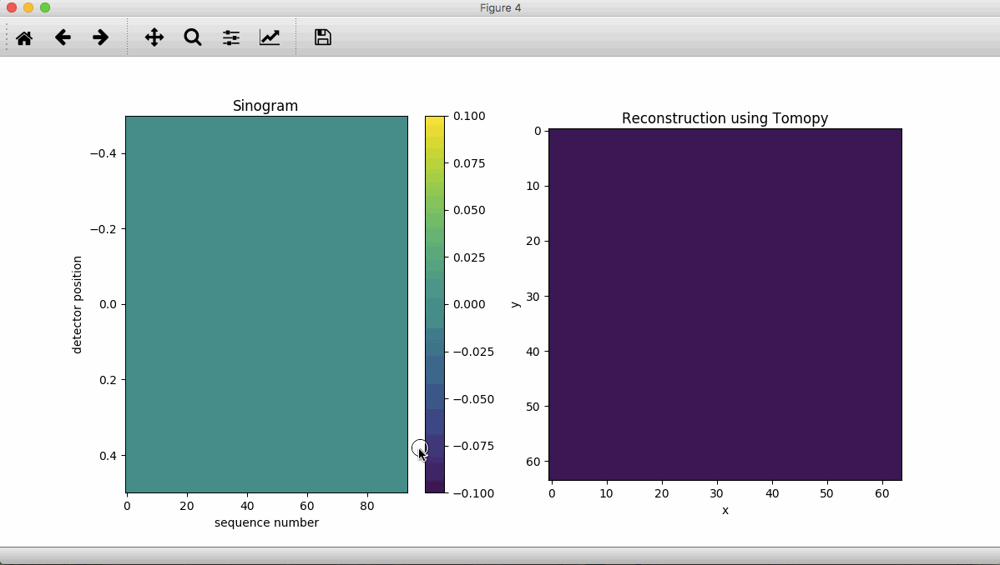
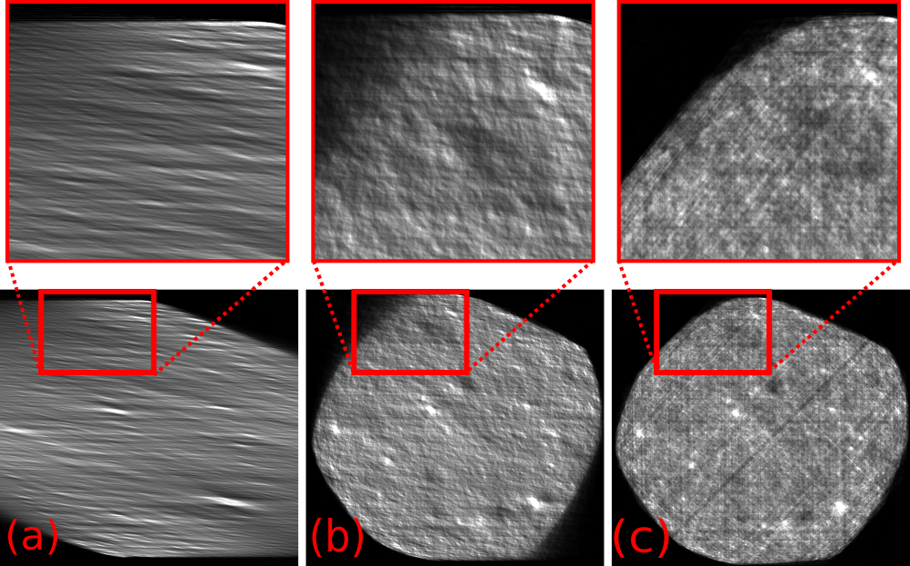

The Bluesky Project Contributors
(NSLS-II, APS, LCLS-II, ALS)
User Facilties Have a Data Problem
...and many Data Opportunities! :-D
It starts at data acquisition.
The solution has to start there too.
What changed to make data problems harder?
- Sources got brighter; detectors got larger and faster: greater data velocity and volume.
- This exposes the variety problem we
have at user facilties:
- Large and changing collection of instruments
- Wide span of data rates, structures, and access patterns
- Mix of well-established data processing procedures and original, improvised techniques
- Multi-modal analysis makes this an N^2, ... problem.
"Big data is whatever is larger
than your field is used to."
A spot check for data volume at an NSLS-II Project Beamline so far...
What changed to make data problems easier?
Free, open-source scientific software exploded.
Figure Credit: "State of the Stack" by Jake VanderPlas, SciPy Conference 2015

Figure Credit: Stack Overflow Blog https://stackoverflow.blog/2017/09/06/incredible-growth-python/
HPC is becoming more accessible.
One inviting example: jupyter.nersc.gov
- Jupyter as a familiar, user-friendly portal
- Dask for familiar numpy/pandas idioms distributed over many nodes
Also: Commodity cloud-based tools
- across instruments within a facility
- between facilities
- with outside communities with similar data problems (e.g. climate science)
...which is not a new idea, but ease-of-use matters.
Status Quo:
Data and Metadata are Scattered
- Some critical context is only in people's heads
- Many file formats (tif, cbf, Nexus, other HDF5, proprietary, ...)
meta_data_in_37K_fname_005_NaCl_cal.tif- "Magic numbers" buried in analysis tools
- Notes in paper notebooks
What's the problem?
- Not machine-readable or searchable
- Relationship between any two pieces of data unclear
- Inhibits multi-modal work
- Inhibits code reuse
- Not streaming friendly
What do we need to systematically track?
Experimental Data
Analysis needs more than "primary" data stream:- Timestamps
- Secondary measurements
- "Fixed" experimental values
- Calibration / beam-line conguration data
- Hardware settings
- Hardware diagnostics
- Physical details of the hardware
Sample Data
- What is the sample?
- What is the contrast mechanism?
- Why are we looking at it?
- How was it prepared?
Bureaucratic & Management Information
- Where is the data and how to get it?
- Who took the data?
- Who owns or can access the data?
- How long will we keep the data?
Design Goals
both technical and socilogical
for an end-to-end data acquisition and analysis solution that leverages data science libraries
Technical Goals
- Generic across science domains
- Lightweight
- Put metadata in a predictable place
- Handle asynchronous data streams
- Support multi-modal: simultaneous, cross-beamline, cross-facility
- Support streaming
- Cloud friendly
- Integrate with third-party (meta)data sources
Sociological Goals
- Overcome "not-invented-here"-ism.
- Make co-developed but separately useful components with well-defined boundaries which can be adopted piecemeal by other facilities.
- Drawing inspiration from the numpy project, embrace protocols for interoperability.
It's working!
- Components have been adopted and built upon at APS, ALS, LCLS...
- ...and those projects have been adopted at NSLS-II in turn.
- Most or all of the libraries will be adopted by APS-U beamlines.
Benefits for Users
In general: data management workflows that span across beamlines and computing facilities to provide seamless remote access of user data and analysis resources for post-experiment data analysis
Benefits for Users
- Ability to store the data at the facility for some guaranteed amount of time (actual time facility dependent)
- Ability, if desired, to easily move data off-site at high rate over, for example, ESnet
- Ability to surge, seamlessly as possible, to HPC if required
- Ability to easily create and automatically submit to analysis pipelines (or tweak existing ones)
Bluesky Architecture
Layered design of Python libraries that are:
- co-developed and compatible...
- ...but individually usable and useful
- with well-defined programmatic interfaces
Looking at each component, from the bottom up....
Device Drivers and Underlying Control Layer(s)
You might have a pile of hardware that communicates over one or more of:
-
 Experimental Physics and Industrial Control System (EPICS)
Experimental Physics and Industrial Control System (EPICS)
- LabView
- Some other standard
- Some vendor-specific, one-off serial or socket protocol
Ophyd: a hardware abstraction layer
- Put the control layer behind a high-level interface with methods like
trigger(),read(), andset(...). - Group individual signals into logical "Devices" to be configured and used as one unit.
- Assign signals and devices human-friendly names that propagate into metadata.
- Categorize signals by "kind" (primary reading, configuration, engineering/debugging).
BlueSky: an experiment specification and orchestration engine
- Specify the logic of an experiment in a hardware-abstracted way. Bluesky says a detector should be triggered; ophyd sorts out how.
- First-class support for adaptive feedback between analysis and acquisition.
- Data is emitted in a streaming fashion in standard Python data structures.
- Pause/resume, robust error handling, and rich metadata capture are built in.
DataBroker: rich search and access to saved data
- An API on top of a database (e.g. MongoDB)
- Search on arbitrary user-provided or automatically-captured metadata.
- Streaming-friendly (lazy)
- Exactly the same layout originally emitted by Bluesky, so consumer code does not distinguish between "online" and saved data
Key Goal of DataBroker: Keep I/O Concerns Separate!
- The system is unopinionated about data formats.
- Any file I/O happens transparently: the user never sees files, just gets data in memory (e.g. a numpy array).
- Your detector writes in a special format? Register a custom reader at runtime.
- Importers and exporters for some common file formats are built in. More are on the way....
The most important aspect of this system is its well-defined protocols/interfaces between layers.
Embrace Protocols
Important Protocols in this Architecture
- Numpy
__array__protocol - Python
__iter__protocol - Bluesky
Msgprotocol - Ophyd–bluesky protocol
- Channel Access protocol
Numpy __array__ protocol
- Libraries like scikit-image and scikit-learn can share an in-memory array representation without planning around each other.
numpy.sum(dataframe)works on apandas.DataFrameeven though pandas was created long after numpy because pandas implements the__array__protocol.
Protocols enable interoperability
and unforeseen applications.
Python __iter__ protocol
- An "iterable" is a central concept in Python.
- A bluesky experiment procedure ("plan") can be any iterable: a list, a generator (adaptive), or a custom class that implements the
__iter__method.
Rely on what an object can do not what it is.
Bluesky Msg protocol
- An experiment procedure is specified descriptively as an iterable of messages like:
Msg('read', detector) - A consumer (the "Run Engine") iterates through the messages and does the actual I/O.
- This structure means that anyone can build other tools that consume this descriptive representation and do useful things:
- Time estimation
- Limit-checking
- Pre-visualization
Ophyd–bluesky protocol
- Bluesky knows nothing about EPICS or any hardware communication.
- Bluesky expects objects with certain methods, comprising this ophyd–bluesky protocol, and only ever interacts with hardware through them.
- This makes it easy to drop in simulated hardware for real hardware, or to implement alternatives to ophyd that work the same with bluesky.
Channel Access protocol
- Another long-standing example of the power of protocols
- Abstracts over device drivers so that many clients — CSStudio, EDM, caput/get/monitor, Archiver, ... — can treat them alike
Event Model
Interfaces, not File Formats
- Unopinionated about file formats
- Separates I/O from science logic
- Plays well with streaming / cloud
- Separates semantics from on-disk serialization and transport mechanism
- Can change storage with no change to consumer code
- Live data and saved data can be fed into the same consumers ("streaming first!")
Minimalist and Extensible

Bluesky emits documents, streamed or in batches
- Bluesky is responsible for organizing metadata and readings from hardware into valid documents.
- Sometimes the readings come one at a time and Events are emitted steadily during an experiment.
- In special applications (commonly, fly scans) the readings come from the hardware in bulk and Events are emitted in batch(es).
Payoff:
Easy and robust integration with existing software
A Gaussian is fit to a stream of measured data using the Python library lmfit (from U. Chicago / APS).
Proof of concept:
In this scan, each step is determined adaptively in response to local slope.
The system is designed to make fast feedback easy to write.
LCLS's Skywalker project builds on this to automatically deliver the photon beam to a number of experimental hutches at LCLS.
The Xi-cam 2 GUI / plugin framework from CAMERA
has adopted Bluesky's Event Model
for its internal data structures.
A stream of images from a linear detector is reconstructed into a volume using tomopy (APS).
It took one TomoPy developer and one Bluesky developer less than 20 minutes to write this.
Real-time Data Analysis at APS
Data is streamed from APS to Argonne Leadership Compute Facility. Results are immediately visualized at APS.
Links
- Live, Public Demo Deployment (using Jupyter):
try.nsls2.bnl.gov - Documentation:
nsls-ii.github.io - Code and Arguments about Code:
github.com/NSLS-II - These Slides:
nsls-ii.github.io/bluesky-slides